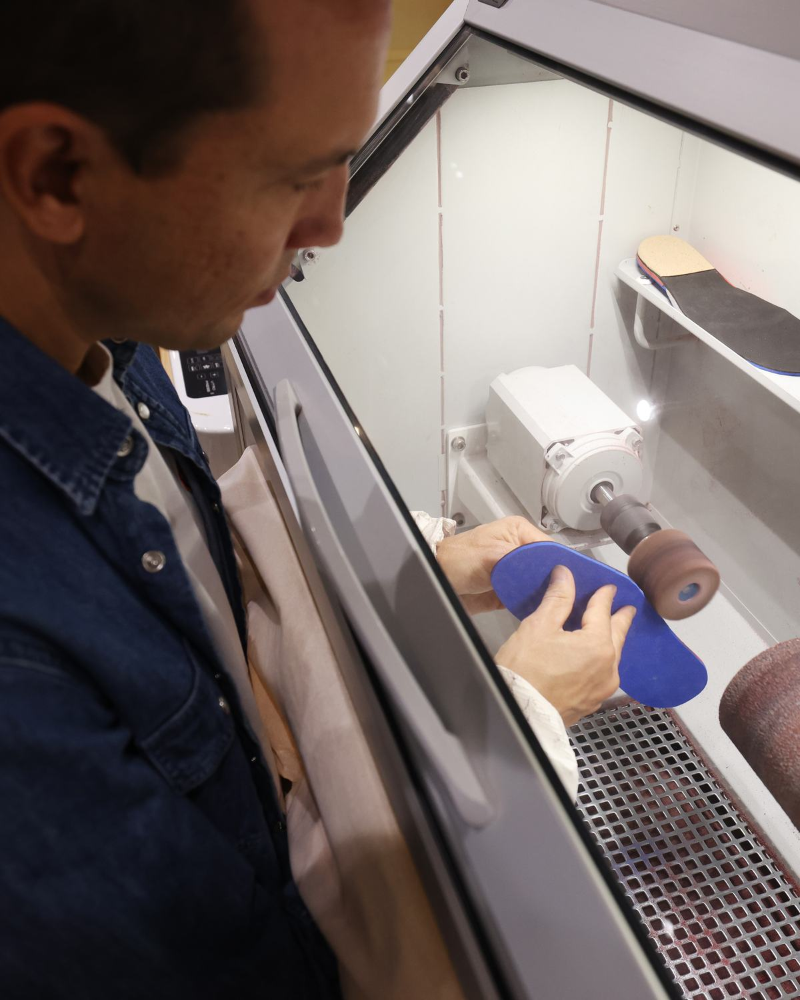
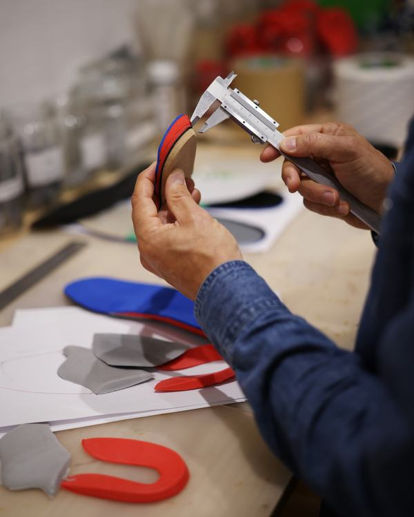
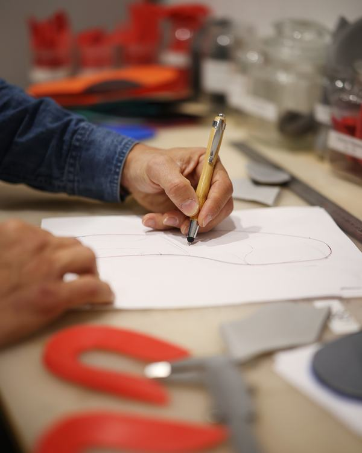
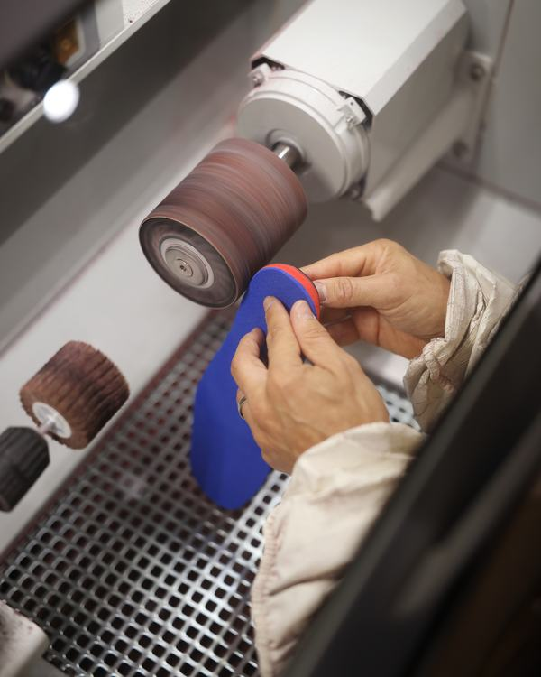

Des semelles orthopédiques et des orthèses sur mesure, pour avancer sans douleur.
Pierre-Emmanuel Giraud, orthopédiste-orthésiste-podologiste, conçoit et fabrique dans l’atelier de son cabinet des semelles orthopédiques et des orthèses pour le pied, la main et le poignet. Douleurs du quotidien, déformations, suites de traumatisme, enfants comme sportifs : chaque appareillage est fait pour vous.

Où avez-vous mal ?
Choisissez la zone qui vous gêne pour comprendre les causes fréquentes et ce qu’un appareillage sur mesure peut apporter.
Une orthopédie artisanale, au plus près de votre quotidien
Sur mesure, intégralement
Chaque semelle, orthèse ou orthoplastie est conçue et façonnée à la main, dans l’atelier attenant au cabinet — un appareillage adapté à votre morphologie, jamais standardisé.
Pour tous, à tout âge
Enfants en croissance, actifs debout toute la journée, seniors, sportifs : l’appareillage tient compte de votre morphologie, de vos chaussures et de vos activités.
Une prise en charge coordonnée
En lien avec votre médecin, votre kinésithérapeute du sport et les autres soignants, pour inscrire l’appareillage dans une trajectoire de soin cohérente.
Pour le pied, la main et le poignet
Du membre inférieur au membre supérieur, des dispositifs fabriqués sur mesure pour soulager, corriger et accompagner.
Semelles & orthèses plantaires
Douleurs du talon ou de l’avant-pied, pied plat ou creux, station debout prolongée, sport : des semelles conçues après un bilan et fabriquées à l’atelier. Dès 170 €, bilan inclus.
En savoir plus Membre inférieurOrthèses de nuit — hallux valgus
Un appareillage nocturne pour accompagner le positionnement du gros orteil et le confort de l’avant-pied.
En savoir plus Membre inférieurOrthoplasties (orteils)
De petites orthèses en silicone réalisées sur mesure pour protéger les orteils des conflits, cors et frottements.
En savoir plus Membre supérieurOrthèses main, poignet & doigts
Orthèses thermoformées, statiques ou dynamiques : pouce, poignet, poignet-pouce et doigts, après traumatisme ou en cas de douleur chronique.
En savoir plusUn doute sur l’appareillage adapté à votre situation ? Le bilan en cabinet permet d’y voir clair.
Voir toutes les prestationsVos semelles naissent ici, à la main
Mesurer, tracer, poncer, ajuster : chaque paire est fabriquée dans l’atelier attenant au cabinet, sans sous-traitance. C’est ce qui permet des délais courts et des retouches sur place.

MesurerÉpaisseurs et éléments correctifs contrôlés au pied à coulisse. 
TracerLe contour suit votre pied et la forme de votre chaussure. 
Poncer & ajusterLa semelle est affinée pour épouser la chaussure.
Et pour les sportifs, de la course au padel
Course à pied, tennis, padel, basket, handball, football, vélo, ski… chaque sport sollicite le pied à sa manière : impacts répétés, appuis latéraux, sauts, chaussures spécifiques. Pierre-Emmanuel Giraud, lui-même marathonien, accompagne les sportifs de tous niveaux, en prévention comme après une blessure.
-
Bilan & analyse de la foulée
Plateforme de pression pour l’analyse statique, tapis de course pour l’analyse dynamique, compte rendu remis.
-
Des semelles adaptées à votre sport
Chaussures de course, de court, de salle, de vélo ou de ski : chaque paire tient compte des contraintes de la discipline.
-
Pathologies fréquentes du sportif
Aponévrosite plantaire, tendinopathie d’Achille, périostite tibiale, douleurs de l’avant-pied, entorses à répétition…

Du bilan à l’appareillage, puis au suivi
Le bilan
Entretien sur vos antécédents, votre activité et vos douleurs, puis examen clinique : étude statique sur podoscope, analyse dynamique de la marche et de la course, examen de l’usure de vos chaussures.
La conception en atelier
Prise d’empreintes et fabrication sur mesure de l’appareillage, ajusté à votre morphologie, à votre chaussage et à votre pratique sportive.
L’essayage et les ajustements
Mise en place, vérifications et retouches. L’appareillage se règle finement et évolue avec vous et votre entraînement.
Le suivi & la coordination
Contrôles réguliers et échanges avec les professionnels qui vous accompagnent — médecin, kinésithérapeute du sport, entraîneur.
Prendre rendez-vous au cabinet
30-32 rue Broca, 75005 Paris — à deux pas de la station Censier-Daubenton. La prise de rendez-vous en ligne précise les disponibilités à jour.